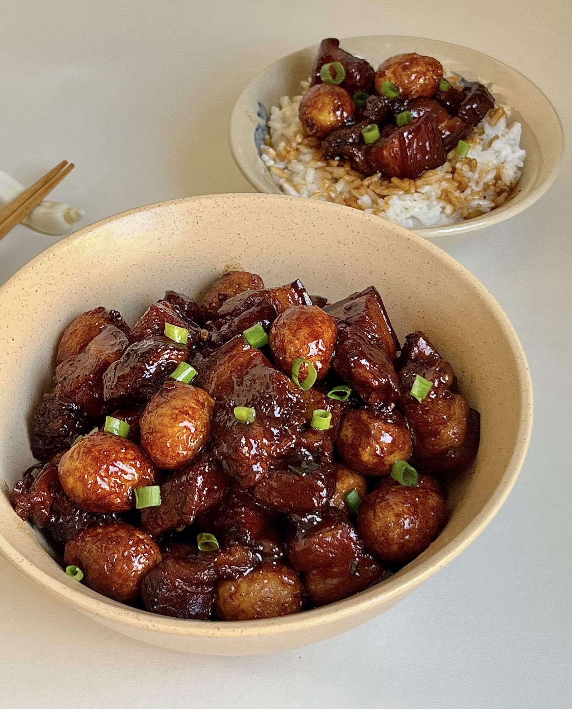
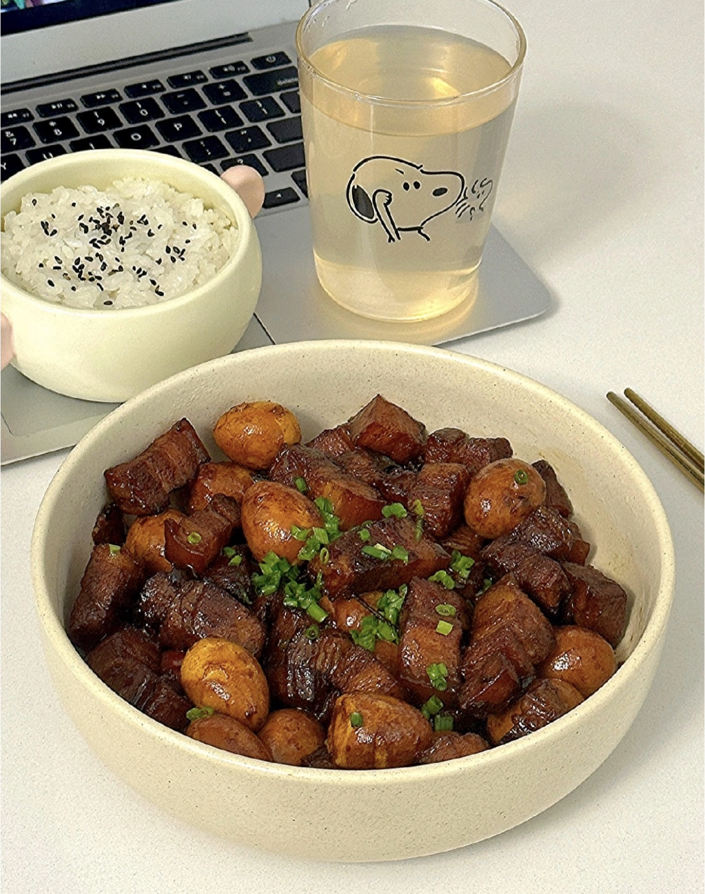

Braised Pork with Quail Eggs
红烧肉鹌鹑蛋 — Rich, glossy braised pork with tender quail eggs in a savory-sweet sauce.
Ingredients
- Pork belly (300–500g)
- Quail eggs
- Ginger slices
- Scallions
- Garlic
- Star anise
- Bay leaves
- Cinnamon stick
- Cooking wine
- Soy sauce
- Dark soy sauce
- Oyster sauce
- Rock sugar
- Salt
- Oil
Directions
- Boil quail eggs for 10 minutes, peel and set aside.
- Cut pork belly into cubes.
- Blanch pork in cold water with ginger and cooking wine.
- Remove and rinse clean.
- Heat a pan, cook pork belly to render some fat until slightly golden.
- Remove excess oil if needed.
- Add a small amount of oil and melt rock sugar to caramel color.
- Add pork back in and coat evenly with caramel.
- Add cooking wine, soy sauce, dark soy, and oyster sauce.
- Add ginger, garlic, scallions, and spices.
- Pour in hot water to cover ingredients.
- Bring to boil, then simmer on low heat for 40 minutes.
- Add quail eggs and continue simmering for 20 minutes.
- Increase heat to reduce sauce until thick and glossy.
- Serve hot with rice.